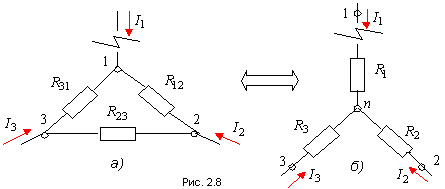

Преобразование треугольника в эквивалентную звезду:
Сопротивление луча эквивалентной звезды равно дроби, в числителе которой произведение двух сопротивлений сторон треугольника, примыкающих к рассматриваемому узлу, делённому на сумму всех сопротивлений сторон треугольника.
